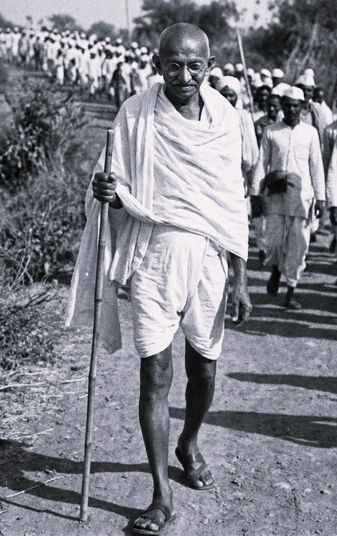

Who Was Mahatma Gandhi?
Mahatma Gandhi, born Mohandas Karamchand Gandhi, was an Indian philosopher, lawyer, and political leader who lived from 1869 to 1948. He is remembered above all as the architect of Satyagraha, a philosophy of nonviolent resistance grounded in truth, and as the central figure who led India's long struggle for independence from British colonial rule through disciplined, nonviolent mass action.
Gandhi is especially associated with insisting that means and ends cannot be separated in ethical and political life, arguing that a genuinely just political outcome could never be secured through violent or dishonest methods. Rather than treating nonviolence merely as a strategic tactic for winning political concessions, the philosophy he developed treats Ahimsa, or nonviolence, as an active and demanding ethical discipline requiring courage, self-restraint, and a willingness to accept suffering rather than inflict it.
Trained originally as a lawyer in London, Gandhi first developed and tested his method of nonviolent resistance during more than two decades spent confronting racial discrimination in South Africa, before returning to India in 1915 to apply and further refine these methods within the much larger struggle against British colonial rule, eventually becoming the most widely recognized leader of the Indian independence movement.
Because Gandhi expressed much of his philosophy through public action, personal experimentation, and extensive journalism and correspondence rather than a single systematic treatise, historians and philosophers continue to debate how best to organize and interpret his wide-ranging body of thought. His importance nonetheless remains foundational, since his particular synthesis of ethics, religion, and political strategy went on to influence movements for civil rights and social justice across many countries long after his own lifetime.
Mahatma Gandhi: Quick Facts
- Name — Mohandas Karamchand Gandhi (Mahatma Gandhi, Bapu)
- Period — 1869–1948
- Born in — Porbandar, Gujarat, India
- Philosophical period — Modern Indian philosophy
- Associated with — Satyagraha and the philosophy of nonviolence
- Known for — Leading India's nonviolent independence movement
- Major works — Hind Swaraj and The Story of My Experiments with Truth
- Core doctrines — Satyagraha, Ahimsa, Swaraj, and Sarvodaya
- Major campaigns — The Salt March, the Non-Cooperation Movement, and the Quit India Movement
- Death — Assassinated in New Delhi on January 30, 1948
Gandhi and the Struggle Against Colonial Rule

Gandhi's philosophy took shape during a period of intense colonial domination across much of the world, in which the British Empire controlled vast territories, including India, through a combination of military force, economic extraction, and legal and administrative control that left colonized populations with limited formal political power.
Gandhi's early legal career and his more than twenty years spent living and working in South Africa exposed him directly to systematic racial discrimination faced by Indian immigrants under colonial law, an experience that proved decisive in shaping his conviction that organized, disciplined resistance could challenge unjust laws without resorting to the violence that colonial authorities themselves so often employed.
By the time Gandhi returned to India in 1915, the Indian independence movement already included a range of political strategies, from constitutional negotiation to more militant revolutionary activity, and Gandhi's particular contribution was to develop and popularize a third path, a form of mass nonviolent resistance capable of mobilizing enormous numbers of ordinary people while denying colonial authorities the justification that violent uprising might have provided.
In the tradition associated with Gandhi, philosophical reflection therefore combined closely with sustained, large-scale political organizing, treating carefully disciplined nonviolent action not as a mere tactic but as a coherent ethical and even spiritual practice capable of transforming both the individual practitioner and the wider society in which that practice took place.
Who Was Mahatma Gandhi and What Did He Do?
Gandhi was born in the coastal town of Porbandar, in the Gujarat region of western India, into a family active in local administration and steeped in Hindu and Jain religious practice, an early environment that exposed him from childhood to the ethical emphasis on nonviolence and self-discipline that would later become central to his mature philosophy.
As a young man, Gandhi traveled to London to study law, an experience that brought him into direct contact with a range of Western philosophical, religious, and social reform movements, including vegetarian and theosophical circles, while also deepening his own engagement with central texts of Hindu philosophy, particularly the Bhagavad Gita, which he would return to throughout his life as a central source of ethical guidance.
Gandhi then spent over two decades in South Africa, where he worked as a lawyer representing the local Indian community and where he first developed and tested the method of organized nonviolent resistance he would come to call Satyagraha, leading a series of campaigns against discriminatory laws targeting Indian residents.
Returning to India in 1915, Gandhi progressively assumed leadership of the Indian National Congress and the broader independence movement, organizing major nonviolent campaigns including the Non-Cooperation Movement of the early 1920s, the 1930 Salt March to Dandi in protest of the colonial salt tax, and the Quit India Movement of 1942, each combining mass public participation with strict discipline in nonviolent method.
Gandhi was assassinated in New Delhi on January 30, 1948, only months after India achieved independence, by a Hindu nationalist who opposed his continued advocacy for religious tolerance and reconciliation between Hindu and Muslim communities during the traumatic period surrounding the partition of British India.
What Did Mahatma Gandhi Believe?
Gandhi's philosophy centers on the conviction that truth and nonviolence are not separate ethical principles but are, in his own understanding, two aspects of a single underlying reality, so closely bound together that he frequently described his own life's work as a continuous series of experiments in living out this unity in practice.
At the heart of this philosophy lies Gandhi's famous claim that "Truth is God," a formulation through which he reversed the more conventional religious statement that God is truth, treating the sincere and rigorous pursuit of truth itself as the most direct and universally accessible path toward the divine, open to people of every religious background rather than confined to any single tradition.
Gandhi's political philosophy of Satyagraha follows directly from this commitment to truth, holding that a person who has genuinely grasped the truth of a situation has both the right and the responsibility to resist injustice, but must do so only through nonviolent means, since violence, resting as it does on coercion and fear rather than genuine persuasion, cannot itself express or advance the truth being defended.
This philosophy extends beyond the political sphere into Gandhi's broader vision of personal and social ethics, including his commitment to simple living, self-reliance, and constructive social programs aimed at uplifting India's rural poor, reflecting his conviction that authentic political transformation must be accompanied by genuine ethical and economic transformation at the level of everyday individual and community life.
Scholars of Indian and political philosophy continue to debate how precisely to categorize Gandhi's thought, since it draws simultaneously on Hindu, Jain, and Christian religious sources, on Western political philosophy, including figures such as Thoreau, Tolstoy, and Ruskin, and on Gandhi's own extensive personal experimentation, resisting easy classification within any single existing philosophical tradition.
What Is Satyagraha in Gandhi's Philosophy?
Satyagraha, a term Gandhi himself coined by combining the Sanskrit words for truth and firmness or force, is usually translated as "truth-force" or "soul-force," describing a method of confronting injustice through disciplined, nonviolent resistance rather than through physical coercion or armed struggle.
Gandhi distinguished Satyagraha sharply from what he called "passive resistance," insisting that genuine Satyagraha requires active courage and a willingness to accept suffering, including imprisonment or physical harm, rather than a merely passive or resigned refusal to cooperate with unjust authority.
A practitioner of Satyagraha, in Gandhi's account, seeks not merely to defeat an opponent politically but to appeal to that opponent's own conscience, transforming the relationship between the two parties through the moral force of disciplined, truthful, and consistently nonviolent action rather than through humiliation or domination.
Gandhi applied this method across an enormous range of campaigns, from local labor disputes in South Africa to nationwide movements against colonial taxation and legislation in India, treating Satyagraha as a genuinely universal method applicable wherever individuals or communities confront injustice, rather than a strategy suited only to the specific conditions of colonial India.
Ahimsa: Gandhi's Philosophy of Nonviolence
Ahimsa, or nonviolence, forms the essential ethical foundation upon which Gandhi's entire philosophy of Satyagraha rests, drawing directly on a much older tradition of nonviolence within Indian religious thought, particularly its rigorous development within Jain philosophy and its presence within Hindu and Buddhist ethical teaching.
For Gandhi, Ahimsa extends considerably beyond the mere avoidance of physical violence, requiring the practitioner to eliminate hatred, ill will, and the desire to harm even in thought and speech, treating genuine nonviolence as an active and positive cultivation of love and goodwill rather than a purely negative restraint from physical aggression.
Gandhi consistently argued that nonviolence, properly understood, is not a strategy for the weak but requires a demanding form of inner strength and self-discipline, since responding to violence or injustice without retaliation, while still actively resisting that injustice, demands considerably more courage than a violent response would require.
This commitment to Ahimsa also shaped Gandhi's personal ethical practice extensively, including his lifelong vegetarianism, his practice of fasting as a form of self-purification and public protest, and his insistence that the ends pursued through political struggle could never justify violent or dishonest means, since violent methods would inevitably corrupt and ultimately undermine the very ends they were meant to secure.
Swaraj: Gandhi's Vision of Self-Rule
Swaraj, usually translated as self-rule or self-governance, is a central concept in Gandhi's political philosophy, carrying a double meaning that operates simultaneously at the level of national political independence and at the level of individual ethical self-mastery.
At the political level, Swaraj referred to Gandhi's central goal of ending British colonial rule and establishing genuine Indian self-governance, a goal he pursued not merely as a change in who held formal political power but as an opportunity to build a society organized around fundamentally different, more decentralized and ethically grounded principles than those of the colonial administration it would replace.
At the individual level, Gandhi insisted that genuine Swaraj required each person to achieve mastery over their own desires, fears, and impulses toward violence, arguing in his early work Hind Swaraj that a nation of individuals who had not achieved this inner self-discipline could not hope to sustain a genuinely free and just society, however formally independent its government might become.
This dual understanding of Swaraj illustrates a broader pattern throughout Gandhi's philosophy, in which political transformation and personal ethical transformation are treated as inseparable, each dependent upon and reinforcing the other rather than existing as separate, unrelated projects.
Gandhi's Views on Religion and Religious Pluralism
Religion was central to Gandhi's understanding of life, ethics, and politics, although he did not believe that genuine religion should be reduced to ritual, sectarian identity, or loyalty to a particular institution. A deeply committed Hindu, Gandhi nevertheless drew insight from Christianity, Islam, Jainism, Buddhism, and other traditions, arguing that no single community possessed a complete monopoly on truth.
Gandhi's religious philosophy was closely connected to his idea of Truth. Because human beings are limited and imperfect, he believed that their understanding of ultimate reality must also remain incomplete, encouraging humility when judging the beliefs of others. This conviction supported his broader commitment to religious tolerance and to respectful dialogue between people belonging to different faiths.
His famous public prayer meetings reflected this pluralistic outlook and often included material associated with several religious traditions. Gandhi consistently argued that religious identity should not become a justification for hatred or political violence, and he devoted much of his later life to efforts aimed at reducing conflict between religious communities during periods of intense communal tension.
Gandhi therefore combined deep personal religious commitment with a political vision in which the state should not impose a single religion upon its citizens. His thought remains important to discussions of religious pluralism because it asks how strong personal faith can coexist with equal respect for people whose beliefs, practices, and traditions are fundamentally different.
Gandhi and B. R. Ambedkar: Their Debate on Caste
One of the most important debates surrounding Gandhi's social philosophy concerns his relationship with B. R. Ambedkar, the jurist, social reformer, and leading critic of the caste system. Both men opposed the oppression and humiliation suffered by communities historically subjected to untouchability, but they differed profoundly about caste, Hindu social structure, political representation, and the most effective path toward genuine social equality.
Gandhi campaigned against untouchability and insisted that political independence would remain morally incomplete if Indian society continued to deny dignity and equal treatment to millions of people. At the same time, his views on the wider caste system developed over the course of his life and have been criticized for not always going as far as Ambedkar's demand for a fundamental destruction of caste hierarchy.
Ambedkar argued more radically that caste was not simply an unfortunate social abuse that could be removed through moral reform while preserving the larger structure of Hindu society. For him, caste represented a deeply entrenched system of inequality requiring structural and political change, including legal rights and independent political representation for oppressed communities.
Their disagreements became particularly significant during debates over political representation in the early 1930s, including the events surrounding the Poona Pact. The Gandhi-Ambedkar debate remains essential for understanding modern Indian political philosophy because it raises a difficult question that continues to matter today: whether moral transformation alone can overcome entrenched systems of social inequality without deeper institutional and structural reform.
Criticisms and Controversies Surrounding Gandhi's Philosophy
Gandhi is one of the most admired figures in modern political thought, but his philosophy has also received substantial criticism from historians, political theorists, social reformers, and later activists. Some critics question whether strict nonviolence can always provide an effective response to extreme oppression, particularly in situations where an opponent is unwilling to respond to moral persuasion or public pressure.
His critique of modern industrial civilization has also remained deeply controversial. In Hind Swaraj, Gandhi expressed profound concern about industrialization, large-scale machinery, and the modern pursuit of material progress, leading critics to argue that some of his proposals were impractical for large and technologically complex modern societies. Others, however, see these criticisms as an early warning about consumerism, environmental destruction, and economic inequality.
Gandhi's ideas about caste have produced some of the strongest criticism, particularly from Ambedkarite thinkers and Dalit scholars. Although Gandhi opposed untouchability and worked for social reform, critics argue that his approach did not always challenge caste hierarchy with the same radicalism found in Ambedkar's philosophy, making the differences between their positions an essential subject of modern Indian intellectual history.
Gandhi's personal experiments and strict ethical disciplines have also generated considerable debate. His views on sexuality, gender, diet, fasting, self-control, and personal authority are often examined critically alongside his political achievements. A serious understanding of Gandhi therefore requires neither uncritical admiration nor simple rejection, but an examination of both the extraordinary influence and the genuine tensions within his ideas and practices.
Gandhi's Legacy and Influence on the World
Gandhi's greatest international legacy lies in demonstrating the enormous political possibilities of organized nonviolent resistance. His methods influenced later movements for civil rights, democracy, racial equality, and national liberation, helping establish nonviolence as a major subject within modern political philosophy rather than merely a private ethical ideal or religious teaching.
Martin Luther King Jr. studied Gandhi's philosophy and drew directly upon the idea that disciplined nonviolent action could confront unjust systems while attempting to preserve the humanity of both the oppressed and the oppressor. Gandhi's example also influenced many other activists and movements, although his methods were adapted in different ways according to particular political and historical circumstances.
Gandhi's thought has also become increasingly relevant to debates about environmental ethics, economic inequality, consumerism, and sustainable living. His emphasis on simplicity, local self-reliance, limits on excessive consumption, and responsibility toward the poorest members of society has encouraged later thinkers to reconsider whether economic progress should be measured only through increasing production and material wealth.
The continuing importance of Gandhi ultimately comes from the unusual combination of philosophy and practice found throughout his life. He did not simply write about truth, nonviolence, self-rule, or social justice; he repeatedly attempted to test these principles through public action. Whether one accepts or criticizes his conclusions, Gandhi remains one of the central modern thinkers for anyone asking how ethical principles can be translated into practical political transformation.
Sarvodaya and Trusteeship: Gandhi's Social and Economic Philosophy
Sarvodaya, meaning "the welfare of all" or "the uplift of all," names Gandhi's broader vision of social and economic organization, a term he adopted partly in response to his reading of the English writer John Ruskin's work Unto This Last, which shaped his conviction that a just society must actively prioritize the wellbeing of its poorest and most marginalized members.
Gandhi's economic philosophy also included the theory of trusteeship, according to which those who possess significant wealth should regard themselves not as absolute owners entitled to unlimited personal consumption but as trustees responsible for using their resources for the benefit of the wider community, a position that sought a middle path between unrestrained capitalism and full state ownership of property.
Central to Gandhi's social vision was his advocacy of Swadeshi, the use and production of local goods, most famously symbolized by his promotion of hand-spun cotton cloth, or khadi, which he presented both as a practical program for rural economic self-reliance and as a powerful symbolic rejection of colonial economic domination.
Gandhi's constructive social programs extended well beyond economic policy to include sustained efforts against caste-based discrimination, particularly his advocacy for the dignity and rights of those subjected to untouchability, reflecting his conviction that political independence would remain incomplete without corresponding social and ethical reform within Indian society itself.
Gandhi's Philosophical and Religious Influences
Gandhi's philosophy drew extensively on the Bhagavad Gita, which he studied and interpreted throughout his life, finding in its teaching of selfless action, or nishkama karma, a model for engaged, disciplined political action performed without attachment to personal reward or outcome.
His close personal friendship with the Jain scholar Raychandbhai deepened his engagement with Jain philosophy's rigorous tradition of Ahimsa, reinforcing convictions about nonviolence that Gandhi had absorbed from childhood within his own Gujarati religious environment.
Gandhi also engaged seriously with Western thinkers, including the American writer Henry David Thoreau, whose essay on civil disobedience influenced Gandhi's own theory of principled lawbreaking, and the Russian novelist and moral philosopher Leo Tolstoy, with whom Gandhi corresponded directly and whose writing on Christian nonviolence and simple living reinforced several of Gandhi's own developing convictions.
Through this wide-ranging synthesis of Hindu, Jain, Christian, and Western philosophical sources, Gandhi developed a distinctively eclectic and practically oriented philosophy, treating the sincere search for truth as a project that could draw responsibly on insight from any tradition willing to contribute to it, rather than remaining confined within the boundaries of a single religious or philosophical school.
Hind Swaraj: Gandhi's Foundational Political Text
Hind Swaraj, or "Indian Home Rule," composed by Gandhi in 1909 while traveling by ship, stands as his most concentrated and systematic early statement of political philosophy, presented in the form of a dialogue between an editor and a reader debating the proper path toward Indian self-governance.
In this work, Gandhi offers a sweeping critique of modern industrial civilization itself, arguing that mere political transfer of power from British to Indian hands would achieve little if India simply reproduced the same industrial, militaristic, and ethically hollow patterns of modern Western civilization under new management.
Gandhi's critique in Hind Swaraj extends to modern technology, the legal profession, and Western medicine, each examined for the ways Gandhi believed they could undermine genuine human self-reliance and ethical responsibility, positions that remain among the most provocative and heavily debated aspects of his entire body of thought.
Despite its early composition, Hind Swaraj continued to shape Gandhi's later political practice and remains an essential text for understanding the deeper civilizational and ethical concerns that underlay his specific campaigns for Indian political independence throughout the following decades.
Gandhi Compared with Earlier Indian Philosophical Traditions
Gandhi's emphasis on Ahimsa connects his philosophy directly to a much older current within Indian thought, particularly the rigorous nonviolence developed within Jain philosophy, though Gandhi extended and applied this principle to large-scale organized political action in a manner without clear historical precedent.
Where classical Vedanta philosophers such as Adi Shankaracharya and Madhvacharya focused primarily on metaphysical questions concerning the soul's relationship to ultimate reality, Gandhi's philosophy, while deeply informed by Hindu religious sources, especially the Bhagavad Gita, remained consistently oriented toward practical ethical and political action in the world rather than toward systematic metaphysical argument.
Gandhi's insistence on selfless, disciplined action performed without attachment to personal outcome closely echoes the teaching of nishkama karma found in the Bhagavad Gita, suggesting a direct continuity between his modern political philosophy and much older strands of Indian ethical and devotional thought.
This comparison illustrates how Gandhi's contribution to Indian philosophy operated less as an entirely novel metaphysical system and more as an unusually practical and politically consequential application of long-standing Indian ethical principles, reshaped and tested through direct confrontation with the specific injustices of colonial rule.
Mahatma Gandhi: Main Philosophical Ideas
Because Gandhi expressed his philosophy through both sustained political action and extensive writing, his central ideas are often summarized under a small number of key doctrines that recur throughout his life and work.
Truth as the Highest Reality
Gandhi's claim that "Truth is God" treats the sincere pursuit of truth as the most direct and universally accessible path toward the divine.
Satyagraha, or Truth-Force
Satyagraha describes Gandhi's method of confronting injustice through disciplined, courageous, and strictly nonviolent resistance rather than physical coercion.
Ahimsa as Active Nonviolence
Nonviolence, for Gandhi, requires the active cultivation of goodwill and the elimination of hatred in thought and speech, not merely the avoidance of physical harm.
Swaraj at Two Levels
Gandhi's concept of self-rule operates simultaneously at the level of national political independence and individual ethical self-mastery.
Sarvodaya and Trusteeship
Gandhi's social and economic philosophy prioritizes the welfare of society's poorest members and treats wealth as a trust to be used for the common good.
What Do We Actually Know About Gandhi's Philosophy?
Because Gandhi lived within well-documented modern history and left an extensive written and journalistic record, his biography is unusually well established compared with many earlier philosophers; the more significant debates concern the interpretation and application of his ideas rather than uncertainty about the events of his life.
Relatively Well-Attested
- Gandhi was born in Porbandar in 1869 and assassinated in New Delhi in 1948.
- He developed and first applied Satyagraha during his years in South Africa.
- He led major nonviolent campaigns including the Salt March and the Quit India Movement.
- He authored Hind Swaraj and The Story of My Experiments with Truth, among many other writings.
- His campaigns played a central role in India's eventual independence in 1947.
Widely Discussed Interpretive Themes
- His identification of Truth with God and its implications for religious pluralism.
- His extensive personal experimentation with diet, celibacy, and self-discipline as part of his ethical practice.
- His sweeping critique of modern industrial civilization in Hind Swaraj.
Areas of Ongoing Scholarly Debate
- How consistently Gandhi's own political practice lived up to the strict standards of nonviolence he articulated.
- The relationship between his views on caste and untouchability and the more radical positions advocated by contemporaries such as B. R. Ambedkar.
- How practical or applicable his critique of modern technology and industry remains for contemporary societies.
- How his philosophy should be classified in relation to established categories of Western and Indian political philosophy.
Why Is Mahatma Gandhi Important in Philosophy?
Gandhi is important because he developed and demonstrated, on an unprecedented scale, that organized nonviolent resistance could serve as an effective and ethically coherent method for confronting significant political injustice, reshaping how later movements around the world approached questions of resistance and social change.
His philosophical legacy raises a fundamental question that remains central to political philosophy and ethics: Can genuine political transformation be achieved, and sustained, without resorting to violence, and what personal and collective discipline does such a transformation actually require?
This question has continued to shape movements for civil rights and social justice across many countries, as later leaders and thinkers examined how Gandhi's methods of Satyagraha and disciplined nonviolent resistance could be adapted to different political and cultural contexts.
Gandhi's importance therefore does not depend on resolving every scholarly debate about the consistency or limits of his own practice. His significance comes from his role in demonstrating the practical and philosophical seriousness of nonviolence as a method of political transformation, a legacy that continued to influence movements for justice long after his own lifetime.
Mahatma Gandhi Explained Simply
Mahatma Gandhi was an Indian philosopher and leader who developed Satyagraha, a philosophy of nonviolent resistance grounded in truth, and used it to lead India's movement for independence from British colonial rule.
Instead of treating nonviolence as a mere political strategy, Gandhi's philosophy insists that truth and nonviolence are inseparable, that unjust means can never secure a genuinely just end, and that political transformation must be accompanied by personal ethical discipline and self-mastery.
His concepts of Satyagraha, Ahimsa, and Swaraj remain among the most influential contributions of modern Indian philosophy to the wider history of political thought and nonviolent resistance movements around the world.
- Philosopher/Leader: Mahatma Gandhi
- Period: 1869–1948
- Tradition: Modern Indian political and ethical philosophy
- Major doctrine: Satyagraha, or truth-force
- Central concern: Achieving justice through nonviolent means
- Associated principle: Ahimsa, active nonviolence
- Major work: Hind Swaraj
- Legacy: Influenced global movements for civil rights and social justice
A Principle Central to Gandhi's Philosophy
“Truth is God.”
Frequently Asked Questions About Mahatma Gandhi
Who was Mahatma Gandhi?
Mahatma Gandhi was an Indian philosopher and political leader who developed the philosophy of Satyagraha and led India's movement for independence through nonviolent resistance.
What is Gandhi famous for?
Gandhi is famous for developing Satyagraha, leading nonviolent campaigns including the Salt March and the Quit India Movement, and inspiring later movements for civil rights and social justice around the world.
What did Gandhi believe?
Gandhi believed that truth and nonviolence are inseparable, that unjust means can never secure a just end, and that political transformation must be accompanied by personal ethical discipline and self-mastery.
What is Satyagraha in Gandhi's philosophy?
Satyagraha, meaning truth-force or soul-force, is Gandhi's philosophy of nonviolent resistance, in which a person confronts injustice through disciplined, nonviolent action grounded in truth rather than through physical coercion.
What did Gandhi mean by Ahimsa?
Ahimsa, or nonviolence, is the foundational ethical principle of Gandhi's philosophy, requiring the avoidance of harm not only in physical action but in thought and speech, and treated by Gandhi as inseparable from the pursuit of truth.
What is Swaraj?
Swaraj, or self-rule, refers both to Gandhi's political goal of Indian independence from colonial rule and to his ethical vision of individual self-mastery over one's own desires and impulses.
What is Hind Swaraj about?
Hind Swaraj is Gandhi's 1909 text presenting his early political philosophy through a dialogue that critiques modern industrial civilization and argues that Indian self-rule requires more than a mere transfer of political power.
What influenced Gandhi's philosophy?
Gandhi's philosophy drew on the Bhagavad Gita, Jain teachings on nonviolence, and Western thinkers including Henry David Thoreau and Leo Tolstoy, combined through his own extensive personal experimentation.
How is Gandhi connected to earlier Indian philosophy?
Gandhi's emphasis on Ahimsa draws directly on the older Jain tradition of nonviolence, while his ideal of selfless action echoes the teaching of nishkama karma found in the Bhagavad Gita.
Why is Gandhi important today?
Gandhi remains important because his philosophy of nonviolent resistance continues to influence movements for civil rights and social justice around the world, demonstrating the practical and philosophical seriousness of nonviolence as a method of political change.
Related Indian Philosophers
Mahatma Gandhi belongs to the wider tradition of modern Indian philosophy. Explore philosophers who developed related ideas about ethics, truth, and the nature of reality.
Philosophy Branches Connected to Gandhi
Gandhi's philosophical legacy is particularly important for ethics, where philosophers investigate the relationship between means and ends, and for political philosophy, which examines the nature of justice, resistance, and self-governance.
Why Mahatma Gandhi Still Matters
Gandhi did not leave behind a single systematic philosophical treatise in the manner of some earlier thinkers, yet his life's work amounted to one of the most sustained and consequential practical experiments in ethical and political philosophy of the modern era.
Yet the questions associated with Gandhi remain fundamental to philosophy: Can truth and nonviolence really be treated as inseparable? Can political transformation be achieved without violence? What discipline does a genuinely ethical life in public action actually require?
The philosophy of Satyagraha he developed and tested across decades of public struggle transformed these questions into a practical method that reshaped the course of Indian history and influenced movements for justice around the world. His emphasis on truth, nonviolence, and self-mastery made Mahatma Gandhi one of the most influential and enduring figures in the history of modern philosophy.
Explore Great Philosophers